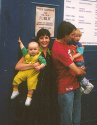

Asher's Page
Updated 02/10/2002
Below is an interview conducted with Asher by Daddy, on the 2nd of October: Are you feeling better after dinner?
Have you had a happy day?
Can you do clapping?
Clapping. Like this.
That's Daddy's pen. NO. Say "Daddy".
Clever boy. Asher. Asher.
Shall we do clapping?
Back to the main page.

Asher is almost a year
old now, and finds life enjoyable, but frustrating.
You've got a cold Asher, are you ok?
Ga Ga.
(Asher sits on the bed looking worried, then happy.)
Da Da. Da Da. Da Dee.
(Asher crawls to the edge of the bed, and is stopped by Daddy.)
Aaaaaa. Aaaaa.
(Asher grabs Daddy's foot.)
Aaaaa. Aaaaa.
(Asher crawls to Daddy, while Daddy claps.)
(Asher crawls to Daddy, and dribbles a bit on the notebook. Asher tries to grab the pen.)
Da Der. Da Der.
(Asher reaches for the pen again.)
Aaaas saaa.
(Asher tries to grab the pen again.)
(Asher starts crying because he can't get the pen. Daddy stands Asher up,
and he changes to instant happiness, and the interview is terminated.)